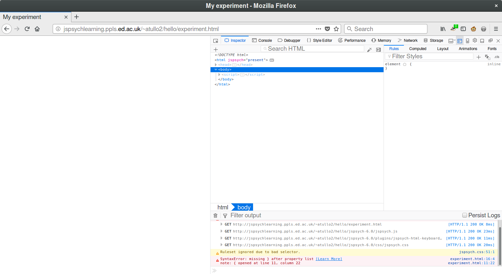

jsPsych practical¶
Documentation and examples¶
Just a reminder ….
Throughout this practical please keep the documentation handy.
jsPsych website: https://www.jspsych.org MDN (for HTML, CSS and JavaScript): https://developer.mozilla.org/
Most of the time for HTML, CSS and JavaScript docs, typing “mdn <something>” into a search engine will get you the right page. For example if I search for
mdn array
the first result is:
https://developer.mozilla.org/en-US/docs/Web/JavaScript/Reference/Global_Objects/Array
Also please refer to the front page where there are many examples you can refer to. Feel free to copy these and adapt them to what you need.
Some of the examples use a test set of images of animals (Dog1.jpg etc.).
If you’d like to use these
please download them from here:
CyberDuck¶
Make sure that CyberDuck (or another SFTP client) is configured and able to connect to the server. Also, make sure that you can SSH in to your server. If either of these is not working please let one of the tutors know.
It would be useful to make sure that CyberDuck can edit files on the server directly – this will save you a lot of time.
Installing jsPsych¶
Log in to your server using SSH.
Make sure that jsPsych is activated using the commands you were given in the server instructions (6.2 Enabling jsPsych).
Now let’s make a directory for jsPsych to live in, download and unpack it.
We’ll need to install unzip to do this.
sudo apt install unzip
cd /var/www/html
mkdir jspsych-6.1.0
cd jspsych-6.1.0
wget https://github.com/jspsych/jsPsych/releases/download/v6.1.0/jspsych-6.1.0.zip
unzip jspsych-6.1.0.zip
rm jspsych-6.1.0.zip
All done, now let’s make a directory for your test experiment:
mkdir /var/www/html/hello
Now make the two files for the test experiment.
You can either create two files on your computer and copy them over, or create
them on the server. Make a file called hello.html with these
contents:
<!DOCTYPE html>
<html>
<head>
<title>Example experiment</title>
<script src="../jspsych-6.1.0/jspsych.js"></script>
<script src="../jspsych-6.1.0/plugins/jspsych-html-keyboard-response.js"></script>
<script src="hello.js"></script>
<link href="../jspsych-6.1.0/css/jspsych.css" rel="stylesheet" type="text/css"></link>
</head>
<body>
</body>
</html>
and hello.js with these contents:
var trial = {
type: 'html-keyboard-response',
stimulus: 'Hello world!'
};
jsPsych.init({
timeline: [trial]
});
If this is working correctly, when you go to:
https://<name>.cogsciexperiment.au.dk/hello/hello.html
(substitute the correct name for your server!) you should see the words “Hello world!” which disappear when you press a key.
Breakout
Let’s go into our breakout groups and check that everyone can successfully upload and run the example.
More experiments¶
Throughout this practical, it’s wise to keep a copy of each example you work
on. When you start working on a new example, usually you’ll want to start from
a copy of the previous one. To do this, either use cp -r in the terminal, e.g.
cp -r /var/www/html/hello /var/www/html/next_example
or use “Duplicate” in CyberDuck.
Console and debugger¶
When writing any computer program, it’s always good to have some tools to help you find out what’s going on. This is particularly important when something goes wrong! For an online experiment in JavaScript, you can use the web developer tools in your browser. All recent versions of browsers have these tools built in.
First, here’s how to open developer tools for your browser:
- Firefox
In the menu, Web Developer → Toggle Tools (or Ctrl-Shift-I)
- Chrome
In the menu, More Tools → Developer Tools (or Ctrl-Shift-I)
- Internet Explorer/Edge
Press F12 to start Developer tools
- Safari
Preferences → Advanced and check “Show Develop menu in menu bar”. Then Develop → Show Web Inspector
In my examples I’ll use Firefox, but these are all fairly similar.
Go to the page for your experiment – use the link for the uploaded copy on the server, not the copy on your computer.
Now go to the web page for the example experiment you created. Enable Developer Tools (see the list above) and reload the page. You’ll see something like this:

The console¶
Click on the tab marked “Console”. This contains messages from your web browser. Most useful are the errors! Open your experiment JavaScript file and break the code.
Yes, I’m actually telling you to break the code! The easiest way is to delete a bracket –
(,[or{, as if these are not in matching pairs that will cause an error.
Now reload the page. You should see something like this:
There’s an error reported in the console, in red. This will give you a clue as to where the problem is! You can click on the links on the right which will show you the relevant parts of the code. While error messages can be a little cryptic, there’s usually something which will help, like “missing }”.
Now fix your experiment!
The debugger¶
These tools can also allow you to step through the code line-by-line. Now click on the tab marked “Debugger” or “Sources”. You’ll see something like this:

Here you can see your code, and watch it run. Click in the margin next to the code, on the line:
jsPsych.init({
Now reload the page. The program has stopped on that line. The point that you chose by clicking in the margin is called a breakpoint.

On the right there’s a sidebar called “Scopes”. (This has other names in other browsers, but there should be a list of names and values somewhere). Here you’ll be able to see what value different variables have. Some of these are built in to the browser, or part of the internal workings of jsPsych – don’t worry about these for now.
The important thing to note is that you can see the value for the node (in the tutorial,
this is called trial). As you build up a more complex program there will be
many variables, and their values can change as the program runs, so it’s good
to know that you can inspect this as the program runs.
You can also continue running the program. These tools, or something like them, will be near the code:

The first of these controls (the triangle or “play button”) lets the program continue running until it finishes, or until another breakpoint is reached. The second steps through the code gradually, one line at a time.
The console again¶
The console also allows you to try out bits of JavaScript. This can be really useful for learning, or trying out a small example to figure out why something doesn’t work.
(Note: in Firefox there is a distinction between “Web Console” and “Browser Console”. The first one shows just the errors for the page we’re on – this is the one we want to use.)
Let’s try out the Array (list) method .filter(). This takes a function and returns
all the items for which the function returns true.
So in this code (try it!):
var example = [10, 5, 7, 13, 8, 22];
example.filter(function(x) { return x > 10; });
wherever the value in the list is greater than 10, x > 10 is true, and
so it’s included in the result. Where x > 10 is false, it’s not
included.
Note that I didn’t have to do anything to print out the value. This is a convenience in the JavaScript console interface – if a value is returned it assumes you want to see it! (This is in common with e.g. the Python and MATLAB prompts that do the same thing).
There are lots of useful methods like this in JavaScript, particularly for Array and String. If you find yourself writing custom code for something that seems like it should be simple, take a look as it might already be built in to the JavaScript language. You can also include JavaScript libraries other than jsPsych to add extra functionality.
That concludes the introduction to Developer Tools. Don’t worry if you didn’t understand everything on the screen when it was running – the important thing is to know that it’s there to help you when your program isn’t working!
Task – Stroop task¶
Let’s create a Stroop task in jsPsych.
In general when creating an experiment,
it’s useful to break the task down into smaller, easily testable things that we
can do. So for now, let’s skip saving data, and just use
jsPsych.data.displayData to show the results at the end.
Here’s a list of progressively harder tasks to guide you towards a solution:
Display a word in large text in the centre of the screen
Vary the colour of the word
Generate trials for all word / colour combinations using factorial design (in a real experiment we’d want 50% congruent and 50% incongruent trials – I’ll leave that to the end!)
Add a fixation cross before the word stimulus, and a blank screen for an inter-trial interval afterwards.
Hints¶
Hints to get you started on this task:
You can apply some style to text in HTML without changing the CSS file. You can enclose the text in tags and use
style=. For example:<span style="font-weight: bold">word</span>.Look up the CSS properties
font-sizeandcolor– remember MDN is good for this!A blank screen can just be a
html-keyboard-responseshowing an empty string (stimulus: "")
Breakout
Let’s go into our breakout groups to work on this task!

{kind=link}